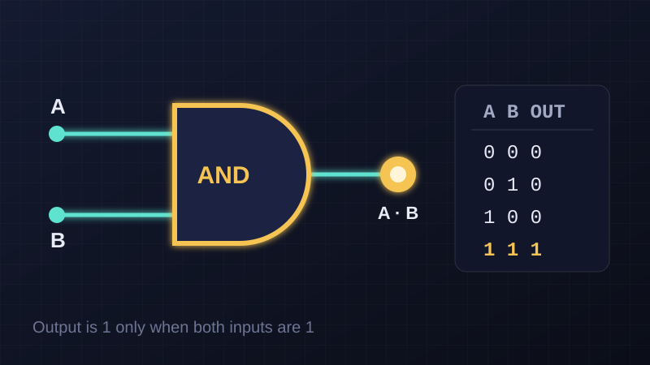

Logic Gates in the Lab
In the university lab, our group of four built logic gates — AND, OR and NOT — and made a video explaining them. Three of us each built one gate, and the fourth member edited the video.
My part: the AND gate, which I built successfully. Its output is on only when both inputs are on.
- Logic gates
- Circuits
- Teamwork (4 people)
- Video